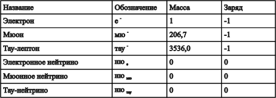
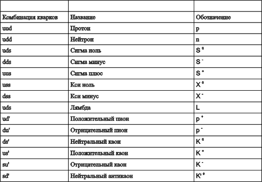
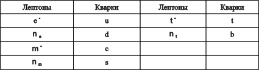
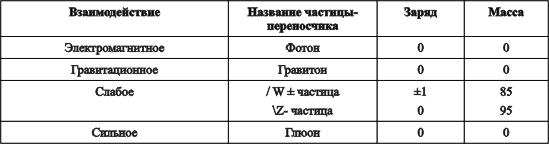

Суперсила. Поиски единой теории природы.
П.Девис
6. Мир субатомных частиц
Расщепление атома
Часто говорят, что существуют два вида наук — большие науки и малые. Расщепление атома — большая наука. Она располагает гигантскими экспериментальными установками, колоссальными бюджетами и получает львиную долю Нобелевских премий.
Зачем физикам понадобилось расщеплять атом? Простой ответ — чтобы понять, как устроен атом, — содержит лишь долю истины, но есть и более общая причина. Говорить буквально о расщеплении атома не вполне правильно. В действительности речь идет о столкновении частиц высокой энергии. При столкновении субатомных частиц, движущихся с большими скоростями, происходит рождение нового мира взаимодействий и полей. Несущие огромную анергию осколки материи, разлетающиеся после столкновений, таят в себе секреты природы, которые от "сотворения мира" оставались погребенными в недрах атома.
Установки, на которых осуществляется столкновение частиц высоких энергий, — ускорители частиц — поражают своими размерами и стоимостью. Они достигают нескольких километров в поперечнике, и по сравнению с ними даже лаборатории, в которых изучаются столкновения частиц, кажутся крошечными. В других областях научных исследований оборудование размещается в лаборатории, в физике высоких энергий лаборатории пристраиваются к ускорителю. Недавно Европейский центр ядерных исследований (ЦЕРН), расположенный недалеко от Женевы, выделил несколько сотен миллионов долларов на строительство кольцевого ускорителя. Длина окружности сооружаемого для этой цели туннеля достигает 27 км. Ускоритель, получивший название ЛЭП (LEP, Large Electron-Positron ring — большое электрон- позитронное кольцо), предназначен для ускорения электронов и их античастиц (позитронов) до скоростей, всего лишь "на волосок" отличающихся от скорости света. Чтобы иметь представление о масштабах энергии, вообразим, что вместо электронов до таких скоростей разгоняется монетка достоинством в один пенни. В конце цикла ускорения она обладала бы энергией, достаточной для производства электроэнергии на сумму 1000 млн. долл.! Неудивительно, что подобные эксперименты принято относить к физике "высоких энергий". Двигаясь внутри кольца навстречу друг другу, пучки электронов и позитронов испытывают лобовые столкновения, при которых электроны и позитроны аннигилируют, высвобождая энергию, достаточную для рождения десятков других частиц.
Что это за частицы? Некоторые из них — те самые "кирпичики", из которых построены мы с вами: протоны и нейтроны, составляющие атомные ядра, и обращающиеся вокруг ядер электроны. Другие частицы обычно в окружающем нас веществе не встречаются: их век чрезвычайно короток, и по истечении его они распадаются на обычные частицы. Число разновидностей таких нестабильных короткоживущих частиц поразительно: их известно уже несколько сотен. Подобно звездам, нестабильные частицы слишком многочисленны, чтобы их различать "по именам". Многие из них обозначены только греческими буквами, а некоторые — просто числами.
Важно иметь в виду, что все эти многочисленные и разнообразные нестабильные частицы отнюдь не являются в прямом смысле составными частями протонов, нейтронов или электронов. Сталкиваясь, электроны и позитроны высоких энергий вовсе не разлетаются на множество субатомных осколков. Даже при столкновениях протонов высоких энергий, заведомо состоящих из других объектов (кварков), они, как правило, не расщепляются на составные части в обычном смысле. То, что происходит при таких столкновениях, лучше рассматривать как непосредственное рождение новых частиц из энергии столкновения.
Лет двадцать назад физики были совершенно сбиты с толку многочисленностью и разнообразием новых субатомных частиц, которым, казалось, не будет конца. Невозможно было понять, для чего столько частиц. Может быть, элементарные частицы подобны обитателям зоопарка с их неявно выраженной принадлежностью к семействам, но без какой-либо четкой систематики. Или, возможно, как полагали некоторые оптимисты, элементарные частицы таят в себе ключ к Вселенной? Что такое наблюдаемые физиками частицы: малозначительные и случайные осколки материи или возникающие на наших глазах очертания смутно ощущаемого порядка, указывающего на существование богатой и сложной структуры субъядерного мира? Ныне в существовании такой структуры нет никаких сомнений. Микромиру присущ глубокий и рациональный порядок, и мы начинаем понимать, каково значение всех этих частиц.
Первый шаг к пониманию микромира был сделан в результате систематизации всех известных частиц, подобно тому как в XVIII в. биологи составляли подробнейшие каталоги видов растений и животных. К числу наиболее важных характеристик субатомных частиц относятся масса, электрический заряд и спин.
Поскольку масса и вес связаны между собой, частицы с большой массой часто называют "тяжелыми". Соотношение Эйнштейна Е =mc^ 2 указывает, что масса частицы зависит от ее энергии и, следовательно, от скорости. Движущаяся частица тяжелее покоящейся. Когда говорят о массе частицы, имеют в виду ее массу покоя, поскольку эта масса не зависит от состояния движения. Частица, имеющая нулевую массу покоя, движется со скоростью света. Наиболее очевидный пример частицы с нулевой массой покоя — фотон. Считается, что электрон — самая легкая из частиц с ненулевой массой покоя. Протон и нейтрон почти в 2000 раз тяжелее, тогда как масса самой тяжелой частицы, которую удалось создать в лаборатории (Z-частицы), примерно в 200 000 раз больше массы электрона.
Электрический заряд частиц меняется в довольно узком диапазоне, но, как мы отмечали, всегда кратен фундаментальной единице заряда. Некоторые частицы, например фотон и нейтрино, не имеют электрического заряда. Если заряд положительно заряженного протона принять за +1, то заряд электрона равен -1.
В гл. 2 мы ввели еще одну характеристику частиц — спин. Он также всегда принимает значения, кратные некоторой фундаментальной единице, которая по историческим причинам выбрана равной 1 /2. Так, протон, нейтрон и электрон имеют спин 1/2, а спин фотона равен 1. Известны также частицы со спином 0, 3/2 и 2. Фундаментальных частиц со спином больше 2 не обнаружено, и теоретики полагают, что частиц с такими спинами не существует.
Спин частицы — важная характеристика, и в зависимости от его величины все частицы разделяются на два класса. Частицы со спинами 0, 1 и 2 называются "бозонами" — в честь индийского физика Чатьендраната Бозе, а частицы с полуцелым спином (т.е. со спином 1/2 или 3/2 — "фермионами" в честь Энрико Ферми. Принадлежность к одному из этих двух классов является, вероятно, наиболее важной в перечне характеристик частицы.
Другая важная характеристика частицы — ее время жизни. До недавнего времени считалось, что электроны, протоны, фотоны и нейтрино абсолютно стабильны, т.е. имеют бесконечно большое время жизни. Нейтрон остается стабильным, пока он "заперт" в ядре, но свободный нейтрон распадается примерно за 15 мин. Все остальные известные частицы в высшей степени нестабильны, их времена жизни колеблются в пределах от нескольких микросекунд до 10-23 с. Такие интервалы времени кажутся непостижимо малыми, однако не следует забывать, что частица, летящая со скоростью, близкой к скорости света (а большинство частиц, рождающихся на ускорителях, движутся именно с такими скоростями), успевает пролететь за микросекунду расстояние в 300 м.
Нестабильные частицы претерпевают распад, представляющий собой квантовый процесс, и поэтому в распаде всегда есть элемент непредсказуемости. Продолжительность жизни конкретной частицы невозможно предсказать заранее. На основе статистических соображений можно предсказать лишь среднее время жизни. Обычно говорят о периоде полураспада частицы — времени, за которое популяция тождественных частиц сокращается наполовину. Эксперимент показывает, что уменьшение численности популяции происходит по экспоненте (см. рис. 6) и период полураспада составляет 0,693 от среднего времени жизни.
Физикам недостаточно знать, что та или иная частица существует — они стремятся понять, какова ее роль. Ответ на этот вопрос зависит от перечисленных выше свойств частиц, а также от характера сил, действующих на частицу извне и внутри ее. В первую очередь свойства частицы определяются ее способностью (или неспособностью) участвовать в сильном взаимодействии. Частицы, участвующие в сильном взаимодействии, образуют особый класс и называются андронами. Частицы, участвующие в слабом взаимодействии и не участвующие в сильном, называются лептонами, что означает "легкие". Познакомимся кратко с каждым из этих семейств.
Лептоны
Наиболее известен из лептонов электрон. Подобно всем лептонам, он, по-видимому, является элементарным, точечным объектом. Насколько известно, электрон не имеет внутренней структуры, т.е. не состоит из каких-то других частиц. Хотя лептоны могут иметь электрический заряд, а могут и не иметь, спин у всех у них равен 1/2, следовательно, они относятся к фермионам.
Другой хорошо известный лептон, но уже без заряда, — это нейтрино. Как уже говорилось в гл. 2, нейтрино неуловимы, словно призраки. Так как нейтрино не участвуют ни в сильном, ни в электромагнитном взаимодействиях, они почти полностью игнорируют вещество, проникая через него, как будто его вообще нет. Высокая проникающая способность нейтрино долгое время весьма затрудняла экспериментальное подтверждение их существования. Лишь почти через три десятилетия после предсказания нейтрино они были, наконец, обнаружены в лаборатории. Физикам пришлось ждать создания ядерных реакторов, при работе которых испускается огромное количество нейтрино, и только тогда удалось зарегистрировать лобовое столкновение одной частицы с ядром и тем самым доказать, что она действительно существует. Сегодня удаётся осуществить значительно больше экспериментов с пучками нейтрино, которые возникают при распаде частиц на ускорителе и обладают нужными характеристиками. Подавляющее большинство нейтрино "игнорирует" мишень, но время от времени нейтрино все же взаимодействуют с мишенью, что позволяет получить полезную информацию о структуре других частиц и природе слабого взаимодействия. Разумеется, проведение экспериментов с нейтрино в отличие от экспериментов с другими субатомными частицами не требует использования специальной защиты. Проникающая способность нейтрино столь велика, что они полностью безвредны и проходят сквозь человеческое тело, не причиняя ему ни малейшего вреда.
Несмотря на их неосязаемость, нейтрино занимают особое положение среди других известных частиц, поскольку являются наиболее распространенными частицами по Вселенной, превосходя по численности электроны и протоны в миллиард раз. Вселенная по существу представляет собой море нейтрино, в котором изредка встречаются вкрапления в виде атомов. Вполне возможно даже, что общая масса нейтрино превышает суммарную массу звезд, и поэтому именно нейтрино вносят основной вклад в космическую гравитацию. Согласно данным группы советских исследователей, нейтрино обладает крохотной, но не нулевой массой покоя (менее одной десятитысячной массы электрона); если это действительно так, то гравитационное нейтрино преобладают во Вселенной, что в будущем может вызвать ее коллапс. Так, нейтрино, на первый взгляд наиболее "безобидные" и бестелесные частицы, способны вызвать крушение всей Вселенной.
Среди прочих лептонов следует назвать мюон, открытый в 1936 г. в продуктах взаимодействия космических лучей; он оказался одной из первых известных нестабильных субатомных частиц. Во всех отношениях, кроме стабильности, мюон напоминает электрон: имеет тот же заряд и спин, участвует в тех же взаимодействиях, но имеет большую массу. Примерно за две миллионные доли секунды мюон распадается на электрон и два нейтрино. Мюоны широко распространены в природе, на их долю приходится значительная часть фонового космического излучения, которое регистрируется на поверхности Земли счетчиком Гейгера.
Долгие годы электрон и мюон оставались единственными известными заряженными лептонами. Затем в конце 70-х годов был обнаружен третий заряженный лептон, получивший название "тау-лептон". При массе около 3500 масс электрона тау-лептон заведомо является "тяжеловесом" в трио заряженных лептонов, но во всем остальном он ведет себя подобно электрону и мюону.
Этим список известных лептонов отнюдь не исчерпывается. В 60-х годах было установлено, что существует несколько типов нейтрино. Нейтрино одного типа рождается вместе с электроном при распаде нейтрона, а нейтрино другого типа — при рождении мюона. Нейтрино каждого типа существует в паре со своим собственным заряженным лептоном; следовательно, есть "электронное нейтрино" и "мюонное нейтрино". По всей вероятности, должно существовать и нейтрино третьего типа — сопровождающее рождение тау-лептона. В таком случае общее число разновидностей нейтрино равно трем, а общее число лептонов — шести (табл. 1). Разумеется, у каждого лептона есть своя античастица; таким образом, общее число различных лептонов равно двенадцати.
Таблица 1

Шесть лептонов соответствуют заряженным и нейтральным модификациям (античастицы в таблицу не включены). Масса и заряд выражены в единицах соответственно массы и заряда электрона. Имеются данные, свидетельствующие о том, что нейтрино могут обладать небольшой массой
Адроны
В отличие от горстки известных лептонов адронов существует буквально сотни. Одно лишь это наводит на мысль, что адроны — не элементарные частицы, а построены из более мелких составляющих. Все адроны участвуют в сильном, слабом и гравитационном взаимодействиях, но встречаются в двух разновидностях — электрически заряженные и нейтральные. Среди адронов наиболее известны и широко распространены нейтрон и протон. Остальные адроны короткоживущие и распадаются либо менее чем за одну миллионную секунды за счет слабого взаимодействия, либо гораздо быстрее (за время порядка 10-23 с) — за счет сильного взаимодействия.
В 50-х годах физиков крайне озадачили численность и разнообразие адронов. Но мало-помалу частицы удалось классифицировать по трем важным характеристикам: массе, заряду и спину. Постепенно стали появляться признаки порядка и выстраиваться четкая картина. Появились намеки на то, что за кажущимся хаосом данных скрываются симметрии. Решающий шаг в раскрытии тайны адронов был сделан в 1963 г., когда Марри Гелл- Манн и Джордж Цвейг из Калифорнийского технологического института предложили теорию кварков.
Рис.10 Адроны построены из кварков. Протон (вверху) состоит из двух u-кварков и одного d-кварка. Более легкий пион (внизу) — это мезон, состоящий из одного u-кварка и одного d-антикварка. Другие адроны представляют собой всевозможные комбинации кварков.
Основная идея этой теории очень проста. Все адроны построены из более мелких частиц, называемых кварками. Кварки могут соединяться друг с другом одним из двух возможных способов: либо тройками, либо парами кварк—антикварк. Из трех кварков состоят сравнительно тяжелые частицы — барионы, что означает "тяжелые частицы". Наиболее известны из барионов нейтрон и протон. Более легкие пары кварк—антикварк образуют частицы, получившие название мезоны — "промежуточные частицы". Выбор такого наименования объясняется тем, что первые обнаруженные мезоны занимали по массе промежуточное положение между электронами и протонами. Чтобы учесть все известные тогда адроны, Гелл-Манн и Цвейг ввели три различных типа ("аромата") кварков, получивших довольно причудливые названия: и (от up — верхний), d (от down — нижний) и s (от strange — странный). Допуская возможность различных комбинаций ароматов, можно объяснить существование большого числа адронов. Например, протон состоит из двух и- и одного d-кварков (рис, 10), а нейтрон — из двух d-кварков и одного u-кварка.
Чтобы предложенная Гелл-Манном и Цвейгом теория оказалась действенной, необходимо предположить, что кварки несут дробный электрический заряд. Иначе говоря, они обладают зарядом, величина которого составляет либо 1/3, либо 2/3 фундаментальной единицы — заряда электрона. Комбинация из двух и трех кварков может иметь суммарный заряд, равный нулю или единице. Все кварки имеют спин 1/2. поэтому они относятся к фермионам. Массы кварков не установлены столь точно, как массы других частиц, поскольку энергия связи их в адроне сравнима с массами самих кварков. Однако известно, что s-кварк тяжелее и- и d-кварков.
Внутри адронов кварки могут находиться в возбужденных состояниях, во многом сходных с возбужденными состояниями атома, но со значительно большими энергиями. Избыток энергии, заключенный в возбужденном адроне, настолько увеличивает его массу, что до создания теории кварков физики ошибочно принимали возбужденные адроны за совершенно иные частицы. Ныне установлено, что многие из казавшихся различными адронов в действительности представляют собой лишь возбужденные состояния одного и того же фундаментального набора кварков.
Как уже говорилось в гл. 5, кварки скрепляются между собой сильным взаимодействием. Но они участвуют и в слабом взаимодействии. Слабое взаимодействие может изменять аромат кварка. Именно так происходит распад нейтрона. Один из d-кварков в нейтроне превращается в u-кварк, а избыток заряда уносит рождающийся одновременно электрон. Аналогичным образом, изменяя аромат, слабое взаимодействие приводит к распаду и других адронов.
Существование s-кварков необходимо для построения так называемых "странных" частиц — тяжелых адронов, открытых в начале 50-х годов. Необычное поведение этих частиц, подсказавшее их название, состояло в том, что они не могли распадаться за счет сильного взаимодействия, хотя как сами, так и продукты их распада представляли собой адроны. Физики ломали голову над тем, почему, если и материнские, и дочерние частицы принадлежат к семейству адронов, сильное взаимодействие не вызывает их распада. По какой-то причине эти адроны "предпочитали" гораздо менее интенсивное слабое взаимодействие. Почему? Теория кварков естественным образом решила эту загадку. Сильное взаимодействие не может изменять аромат кварков — на это способно только слабое взаимодействие. А без изменения аромата, сопровождающегося превращением s-кварка в и- или d-кварк, распад невозможен.
В табл. 2 представлены различные возможные комбинации кварков с тремя ароматами и указаны их названия (обычно просто греческая буква). Многочисленные возбужденные состояния не приведены. То обстоятельство, что из различных комбинаций трех основных частиц можно получить все известные адроны, символизировало главный триумф теории кварков. Но несмотря на этот успех, лишь через несколько лет удалось получить прямые физические доказательства существования кварков.
Эти доказательства были получены в 1969 г. в серии исторических экспериментов, проведенных на большом линейном ускорителе в Станфорде (Калифорния, США) — СЛАКе. Станфордские экспериментаторы рассуждали просто. Если в протоне действительно существуют кварки, то можно наблюдать столкновения с этими частицами внутри протона. Необходим лишь субъядерный "снаряд", который можно было бы направить прямо в недра протона. Использовать для этой цели другой адрон бесполезно, так как он имеет такие же размеры, как и протон. Идеальным снарядом мог бы стать лептон, например электрон. Так как электрон не участвует в сильном взаимодействии, он не "увязнет" в среде, которую образуют кварки. Вместе с тем электрон может почувствовать присутствие кварков благодаря наличию у них электрического заряда.
Таблица 2

Трем ароматам кварков, u, d и s, соответствуют заряды +2/3, -1/3 и -1/3; они комбинируются по три, образуя восемь барионов, приведенных в таблице. Пары кварк— антикварк образуют мезоны. (Некоторые комбинации, такие, как sss опущены.)
В станфордском эксперименте трехкилометровый ускоритель по существу выполнял роль гигантского электронного "микроскопа", который позволил получить изображение внутренности протона. Обычный электронный микроскоп дает возможность различать детали размером менее одной миллионной сантиметра. Протон же в несколько десятков миллионов раз меньше, и его можно "прощупать" только электронами, разогнанными до энергии 2.1010 эВ. Во времена станфордских экспериментов лишь немногие физики придерживались упрощенной теории кварков. Большинство ученых ожидало, что электроны будут отклоняться электрическими зарядами протонов, но при этом считалось, что заряд равномерно распределен внутри протона. Если бы это было действительно так, то происходило бы в основном слабое рассеяние электронов, т.е. при прохождении через протоны электроны не претерпевали бы сильных отклонений. Эксперимент показал, что картина рассеяния резко отличается от предполагаемой. Все происходило так, как если бы некоторые электроны налетали на крохотные твердые вкрапления и отскакивали от них под самыми невероятными углами. Теперь мы знаем, что такими твердыми вкраплениями внутри протонов являются кварки.
В 1974 г. упрощенному варианту теории кварков, которая к тому времени получила признание среди теоретиков, был нанесен чувствительный удар. С интервалом в несколько дней две группы американских физиков — одна в Станфорде во главе с Бартоном Рихтером, другая в Брукхейвенской национальной лаборатории под руководством Сэмюэла Тинга — объявили об открытии независимо друг от друга нового адрона, который получил название пси-частицы. Само по себе открытие нового адрона вряд ли было бы особо достопримечательным, если бы не одно обстоятельство: дело в том, что в схеме, предлагаемой теорией кварков, не было места ни для одной новой частицы. Все возможные комбинации из и-, d- и s-кварков и их антикварков были уже "израсходованы". Из чего же состоит пси-частица?
Проблему удалось решить, обратившись к идее, которая уже некоторое время носилась в воздухе: должен существовать четвертый аромат, который до того никому не доводилось наблюдать. Новый аромат уже имел свое название — charm (очарование), или с. Было высказано предположение, что пси-частица — это мезон, состоящий из с-кварка и с-антикварка (с), т.е. cc. Так как антикварки являются носителями антиаромата, очарование у пси-частицы нейтрализуется, и поэтому экспериментального подтверждения существования нового аромата (очарования) пришлось ждать до тех пор, пока не удалось обнаружить мезоны, в состав которых очарованные кварки входили в паре с анти-кваркамп других ароматов. Ныне известна целая вереница очарованных частиц. Все они очень тяжелые, так что очарованный кварк оказался тяжелее странного кварка.
Описанная выше ситуация повторилась в 1977 г., когда на сцену вышел так называемый ипсилон-мезон (ИПСИЛОН). На этот раз без особых колебаний был введен пятый аромат, получивший название b-кварк (от bottom — дно, а чаще beauty — красота, или прелесть). Ипсилон-мезон представляет собой пару кварк— антикварк, состоящую из b-кварков, и поэтому он обладает скрытой красотой; но, как и в предыдущем случае, другая комбинация кварков позволила в конечном счете обнаружить "красоту".
Об относительных массах кварков можно судить хотя бы по тому, что легчайший из мезонов, пион, состоит из пар и- и d-кварков с антикварками. Пси-мезон примерно в 27 раз, а ипсилон-мезон не менее чем в 75 раз тяжелее пиона.
Постепенное расширение списка известных ароматов происходило параллельно увеличению числа лептонов; поэтому возник очевидный вопрос, будет ли когда-нибудь конец. Кварки были введены для того, чтобы упростить описание всего многообразия адронов, но и сейчас есть ощущение, что список частиц снова растет слишком быстро.
Со времен Демокрита основополагающая идея атомизма заключается в признании того, что в достаточно малых масштабах должны существовать подлинно элементарные частицы, из комбинаций которых состоит окружающее нас вещество. Атомистика привлекательна тем, что неделимые (по определению) фундаментальные частицы должны существовать в весьма ограниченном числе. Разнообразие природы обусловлено большим числом не составных частей, а их комбинаций. Когда обнаружилось, что существует множество различных атомных ядер, исчезла надежда, что то, что мы сегодня называем атомами, соответствует представлению древних греков об элементарных частицах вещества. И хотя по традиции мы продолжаем говорить о различных химических "элементах", известно, что атомы вовсе не элементарны, а состоят из протонов, нейтронов и электронов. И коль скоро число кварков оказывается слишком большим, возникает искушение предположить, что и они представляют собой сложные системы, состоящие из более мелких частиц.
Хотя по указанной причине и существует некоторая неудовлетворенность кварковой схемой, большинство физиков считает кварки подлинно элементарными частицами — точечными, неделимыми и не обладающими внутренней структурой. В этом отношении они напоминают пептоны, и уже давно предполагается, что между этими двумя различными, но сходными по своей структуре семействами должна существовать глубокая взаимосвязь. Основания для подобной точки зрения возникают из сравнения свойств лептонов и кварков (табл. 3). Лептоны можно сгруппировать попарно, сопоставив каждому заряженному лептону соответствующее нейтрино. Кварки также можно сгруппировать попарно. Табл. 3 составлена таким образом, что по структуре каждая клетка повторяет расположенную непосредственно перед ней. Например, во второй клетке мюон представлен как "тяжелый электрон", а очарованный и странный кварки — как тяжелые варианты и- и d-кварков. Из следующей клетки видно, что тау-лептон является еще более тяжелым "электроном", а b-кварк — тяжеловесной разновидностью d-кварка. Для полной аналогии необходимы еще одно (тау-лептониое) нейтрино и.шестой аромат кварков, уже получивший название истинного (truth, t). В период работы над этой книгой экспериментальные данные в пользу существования t-кварков не были еще достаточно убедительными, и некоторые физики сомневались в том, что t-кварки вообще существуют.
Таблица 3

Лептоны и кварки естественно объединяются в пары. как показано в таблице. Окружающий нас мир состоит из четырех первых частиц. Но следующие группы, по-видимому, повторяют верхнюю и состоят, кроме нейтрино, из крайне нестабильных частиц.
Могут ли существовать четвертая, пятая и т.д. пары, содержащие еще более тяжелые частицы? Если да, то следующее поколение ускорителей, вероятно, даст физикам возможность обнаружить такие частицы. Однако высказывается любопытное соображение, из которого следует, что иных пар, кроме трех названных, не существует. Это соображение основано на числе типов нейтрино. Мы вскоре узнаем, что в момент Большого взрыва, ознаменовавшего возникновение Вселенной, происходило интенсивное рождение нейтрино. Своеобразная демократия гарантирует каждому виду частиц одинаковую с остальными долю энергии; поэтому, чем больше различных типов нейтрино, тем больше энергии содержится в море нейтрино, заполняющем космическое пространство. Вычисления показывают, что если существует более трех разновидностей нейтрино, то гравитация, создаваемая всеми ими, оказывала бы сильное возмущающее действие на ядерные процессы, протекавшие в первые несколько минут жизни Вселенной. Следовательно, из этих косвенных соображений следует весьма правдоподобный вывод о том, что тремя парами, показанными в табл. 3, исчерпываются все кварки и лептоны, которые существуют в природе.
Интересно отметить, что все обычное вещество во Вселенной состоит лишь из двух легчайших лептонов (электрона и электронного нейтрино) и двух легчайших кварков ( и и d). Если бы все остальные лептоны и кварки внезапно прекратили свое существование, то в окружающем нас мире, по-видимому, очень мало что изменилось бы.
Возможно, более тяжелые кварки и лептоны играют роль своего рода дублеров легчайших кварков и лептонов. Все они нестабильны и быстро распадаются на частицы, расположенные в верхней клетке. Например, тау-лептон и мюон распадаются на электроны, в то время как странные, очарованные и красивые частицы довольно быстро распадаются либо на нейтроны или протоны (в случае барионов), либо на лептоны (в случае мезонов). Возникает вопрос: для чего существуют все эти частицы второго и третьего поколений? Зачем они понадобились природе?
Частицы — переносчики взаимодействий
Шестью парами лептонов и кварков, образующих строительный материал вещества, отнюдь не исчерпывается перечень известных частиц. Некоторые из них, например фотон, не включены в кварковую схему. Частицы, "оставшиеся за бортом", не являются "кирпичиками мироздания", а образуют своего рода "клей", не позволяющий миру распадаться на части, т.е. они связаны с четырьмя фундаментальными взаимодействиями.
Помню, как в детстве мне рассказывали, что Луна заставляет океаны подниматься и опускаться во время ежедневных приливов и отливов. Для меня всегда было загадкой, каким образом океан узнаёт, где находится Луна, и следует за ее движением в небе. Когда уже в школе я узнал о гравитации, мое недоумение только усилилось. Каким образом Луна, преодолев четверть миллиона километров пустого пространства, ухитряется "дотянуться" до океана? Стандартный ответ — Луна создает в этом пустом пространстве гравитационное поле, действие которого достигает океана, приводя его в движение, — конечно, имел какой-то смысл, но все же не удовлетворял меня до конца. Ведь мы не можем видеть гравитационное поле Луны. Может, так только говорится? Разве это действительно объясняет что-нибудь? Мне всегда казалось, что Луна должна каким-то образом сообщать океану, где она находится. Между Луной и океаном должен происходить какой-то обмен сигналами, чтобы вода знала, куда двигаться.
Со временем выяснилось, что представление о силе, передаваемой через пространство в форме сигнала, не так уж далеко от современного подхода к этой проблеме. Чтобы понять, каким образом возникает такое представление, следует рассмотреть более подробно природу силового поля. В качестве примера выберем не океанские приливы, а более простое явление: два электрона сближаются, а затем под действием электростатического отталкивания разлетаются в разные стороны. Физики называют этот процесс проблемой рассеяния. Разумеется, электроны не толкают друг друга буквально. Они взаимодействуют на расстоянии, через электромагнитное поле, порождаемое каждым электроном.
Рис.11. Рассеяние двух заряженных частиц. Траектории частиц искривляются по мере их сближения вследствие действия силы электрического отталкивания.
Нетрудно представить картину рассеяния электрона на электроне. Первоначально электроны разделены большим расстоянием и слабо воздействуют друг на друга. Каждый электрон движется почти прямолинейно (рис. 11). Затем, по мере того как в работу включаются силы отталкивания, траектории электронов начинают искривляться, пока частицы максимально не сблизятся; после этого траектории расходятся, а электроны разлетаются, вновь начиная двигаться по прямолинейным, но уже расходящимся траекториям. Модель такого рода нетрудно продемонстрировать в лаборатории, используя вместо электронов электрически заряженные шарики. И снова возникает вопрос: откуда частица "знает", где находится другая частица, и соответственно этому меняет свое движение.
Хотя картина искривленных траекторий электронов довольно наглядна, она в ряде отношений совершенно непригодна. Дело в том, что электроны — квантовые частицы и их поведение подчиняется специфическим законам квантовой физики. Прежде всего электроны не движутся в пространстве по вполне определенным траекториям. Мы еще можем тем или иным способом определить начальную и конечную точки пути — до и после рассеяния, по сам путь в промежутке между началом и концом движения остается неизвестным и неопределенным. Кроме того, интуитивное представление о непрерывном обмене энергией и импульсом между электроном и полем, как бы ускоряющим электрон, противоречит существованию фотонов. Энергия и импульс могут переноситься полем только порциями, или квантами. Более точную картину возмущения, вносимого полем в движение электрона, мы получим, предположив, что электрон, поглощая фотон поля, как бы испытывает внезапный толчок. Следовательно, на квантовом уровне акт рассеяния электрона на электроне можно изобразить, как показано на рис. 12. Волнистая линия, соединяющая траектории двух электронов, соответствует фотону, испущенному одним электроном и поглощенному другим. Теперь акт рассеяния предстает как внезапное изменение направления движения каждого электрон
Рис.12. Квантовое описание рассеяния заряженных частиц. Взаимодействие частиц обусловлено обменом переносчиком взаимодействия, или виртуальным фотоном (волнистая линия).
Диаграммы такого рода впервые применил Ричард Фейнман для наглядного представления различных членов уравнения, и первоначально они имели чисто символическое значение. Но затем диаграммы Фейнмана стали использовать для схематического изображения взаимодействий частиц. Такие картинки как бы дополняют интуицию физика, однако их следует толковать известной долей осторожности. Например, в траектории электрона никогда не наблюдается резкого излома. Поскольку нам известны только начальное и конечное положения электронов, мы не знаем точно момента, когда происходит обмен фотоном, и какая из частиц испускает, а какая поглощает фотон. Все эти детали скрыты пеленой квантовой неопределенности.
Несмотря на это предостережение, диаграммы Фейнмана оказались эффективным средством квантового описания взаимодействия. Фотон, которым обмениваются электроны, можно рассматривать как своего рода посыльного одного из электронов, сообщающего другому: "Я здесь, так что пошевеливайся!". Разумеется, все квантовые процессы носят вероятностный характер, поэтому подобный обмен происходит лишь с определенной вероятностью. Может случиться, что электроны обменяются двумя и более фотонами (рис. 13), хотя это менее вероятно.
Важно отдавать себе отчет в том, что в действительности мы не видим фотонов, снующих от одного электрона к другому. Переносчики взаимодействия — "внутреннее дело" двух электронов. Они существуют исключительно для того, чтобы сообщать электронам, как двигаться, и, хотя они переносят энергию и импульс, соответствующие законы сохранения классической физики на них не распространяются. Фотоны в этом случае можно уподобить мячу, которым обмениваются на корте теннисисты. Подобно тому как теннисный мяч определяет поведение теннисистов на игровой площадке, фотон влияет на поведение электронов.
Успешное описание взаимодействия с помощью частицы-переносчика сопровождалось расширением понятия фотона: фотон оказывается не только частицей видимого нами света, но и призрачной частицей, которую "видят" только заряженные частицы, претерпевающие рассеяние. Иногда наблюдаемые нами фотоны называют реальными, а фотоны, переносящие взаимодействие, — виртуальными, что напоминает об их скоротечном, почти призрачном существовании. Различие между реальными и виртуальными фотонами несколько условно, но тем не менее эти понятия получили широкое распространение.
Описание электромагнитного взаимодействия с использованием понятия виртуальных фотонов — его переносчиков — по своему значению выходит за рамки просто иллюстраций квантового характера. В действительности речь .идет о продуманной до мельчайших деталей и оснащенной совершенным математическим аппаратом теории, известной под названием квантовой электродинамики, сокращенно КЭД. Когда КЭД была впервые сформулирована (это произошло вскоре после второй мировой войны), физики получили в свое распоряжение теорию, удовлетворяющую основным принципам как квантовой теории, так и теории относительности. Это прекрасный случай увидеть совместные проявления двух важных аспектов новой физики и. проверить их экспериментально.
Теоретически создание КЭД явилось выдающимся достижением. Более ранние исследования взаимодействия фотонов и электронов имели весьма ограниченный успех из-за математических трудностей. Но коль скоро теоретики научились правильно проводить вычисления, все остальное становилось на место. КЭД предложила процедуру получения результатов любого сколь угодно сложного процесса с участием фотонов и электронов.
Рис.13. Рассеяние электронов обусловлено обменом двумя виртуальными фотонами. Такие процессы составляют небольшую поправку к основному процессу, изображенному на рис. 11
Чтобы проверить, насколько хорошо теория согласуется с реальностью, физики сосредоточили внимание на двух эффектах, представлявших особый интерес. Первый касался энергетических уровней атома водорода — простейшего атома. КЭД предсказывала, что уровни должны быть слегка смещены относительно положения, которое они занимали бы, если бы не существовало виртуальных фотонов. Теория очень точно предсказывала величину этого смещения. Эксперимент по обнаружению и измерению смещения с предельной точностью осуществил Уиллис Лэмб из Университета шт. Аризона. Ко всеобщему восторгу результаты вычислений прекрасно совпадали с экспериментальными данными.
Вторая решающая проверка КЭД касалась чрезвычайно малой поправки к собственному магнитному моменту электрона. И снова результаты теоретических расчетов и эксперимента полностью совпали. Теоретики принялись уточнять вычисления, экспериментаторы — усовершенствовать приборы. Но, хотя точность как теоретических предсказаний, так и экспериментальных результатов непрерывно повышалась, соответствие между КЭД и экспериментом оставалось безукоризненным. Ныне теоретические и экспериментальные результаты по-прежнему согласуются в пределах достигнутой точности, что означает совпадение более девяти знаков после запятой. Столь поразительное соответствие дает право считать КЭД наиболее совершенной из существующих естественнонаучных теорий.
Нужно ли говорить, что после подобного триумфа КЭД была принята как модель для квантового описания трех других фундаментальных взаимодействий. Разумеется, полям, связанным с другими взаимодействиями, должны соответствовать иные частицы-переносчики. Для описания гравитации был введен гравитон, играющий такую же роль, как фотон. При гравитационном взаимодействии двух частиц между ними происходит обмен гравитонами. Это взаимодействие можно представить наглядно с помощью диаграмм, напоминающих те, что показаны на рис. 12 и 13. Именно гравитоны переносят сигналы от Луны океанам, следуя которым те поднимаются во время приливов и опускаются при отливах. Гравитоны, снующие между Землей и Солнцем, удерживают нашу планету на орбите. Гравитоны накрепко приковывают нас к Земле.
Подобно фотонам, гравитоны движутся со скоростью света, следовательно, гравитоны — это частицы с "нулевой массой покоя". Но на этом сходство между гравитонами и фотонами кончается. В то время как фотон имеет спин 1, спин гравитона равен 2.
Таблица 4

Частицы-переносчики четырех фундаментальных взаимодействий. Масса выражена в единицах массы протона.
Это важное различие, поскольку оно определяет направление силы: при электромагнитном взаимодействии одноименно заряженные частицы, например электроны, отталкиваются, а при гравитационном — все частицы притягиваются друг к другу.
Гравитоны могут быть реальными и виртуальными. Реальный гравитон — это не что иное, как квант гравитационной волны, подобно тому как реальный фотон — квант электромагнитной волны. В принципе реальные гравитоны можно "наблюдать". Но поскольку гравитационное взаимодействие невероятно слабое, гравитоны не удается детектировать непосредственно. Взаимодействие гравитонов с другими квантовыми частицами настолько слабое, что вероятность рассеяния или поглощения гравитона, например, протоном бесконечно мала.
Основная идея обмена частицами-переносчиками распространяется и на остальные взаимодействия (табл. 4) — слабое и сильное. Однако в деталях имеются важные различия. Напомним, что сильное взаимодействие обеспечивает связь между кварками. Такую связь может создать силовое поле, сходное с электромагнитным, но более сложное. Электрические силы приводят к образованию связанного состояния двух частиц с зарядами противоположных знаков. В случае кварков возникают связанные состояния трех частиц, что свидетельствует о более сложном характере силового поля, которому соответствуют три разновидности "заряда". Частицы — переносчики взаимодействия между кварками, связывающие их попарно или тройками, называют глюонами.
В случае слабого взаимодействия ситуация несколько иная. Радиус этого взаимодействия чрезвычайно мал. Поэтому переносчиками слабого взаимодействия должны быть частицы с большими массами покоя. Энергию, заключенную в такой массе, приходится "брать в долг" в соответствии с принципом неопределенности Гейзенберга, о котором уже шла речь на с. 50. Но поскольку "взятая в долг" масса (и, следовательно, энергия) столь велика, принцип неопределенности требует, чтобы срок погашения такого кредита был чрезвычайно коротким — всего лишь около 10^-28с. Столь короткоживущие частицы не успевают отойти особенно далеко, и радиус переносимого ими взаимодействия очень мал.
В действительности существуют два типа переносчиков слабого взаимодействия. Один из них во всем, кроме массы покоя, подобен фотону. Эти частицы называют Z-частицами. По существу Z-частицы представляют собой новую разновидность света. Другой тип переносчиков слабого взаимодействия, W-частицы, отличаются от Z-частиц наличием электрического заряда. В гл. 7 мы обсудим более подробно свойства Z- и W-частиц, которые были открыты лишь в 1983 г.
Классификация частиц на кварки, лептоны и переносчики взаимодействий завершает перечень известных субатомных частиц. Каждая из названных частиц играет свою, но решающую роль в формировании Вселенной. Не будь частиц-переносчиков, не существовало бы и взаимодействий, и каждая частица осталась бы в неведении относительно своих партнеров. Не могли бы возникнуть сложные системы, любая деятельность была бы невозможна. Без кварков не было бы ни атомных ядер, ни солнечного света. Без лептонов не могли бы существовать атомы, не возникли бы химические структуры и сама жизнь.
Каковы задачи физики элементарных частиц?
Влиятельная британская газета "Гардиан" однажды опубликовала редакционную статью, в которой ставится под вопрос целесообразность развития физики элементарных частиц — дорогостоящего предприятия, которое поглощает не только заметную долю национального бюджета науки, но и львиную долю лучших умов. "Знают ли физики, что они делают? — вопрошала "Гардиан". — Если даже знают, то какая от этого польза? Кому, кроме физиков, нужны все эти частицы?".
Через несколько месяцев после этой публикации мне довелось присутствовать в Балтиморе на лекции Джорджа Киуорта, советника президента США по науке. Киуорт также обратился к физике элементарных частиц, но его лекция была выдержана в совершенно другом тоне. Американские физики были под впечатлением недавнего сообщения из ЦЕРНа, ведущей Европейской лаборатории по физике элементарных частиц, об открытии фундаментальных W- и Z-частиц, которые удалось, наконец, получить на большом протон-антипротонном ускорителе на встречных пучках (коллайдере). Американцы привыкли, что все сенсационные открытия совершаются в их лабораториях физики высоких энергий. Не является ли то, что они уступили пальму первенства, признаком научного и даже национального упадка?
У Киуорта не вызывало сомнений, что для процветания США вообще и американской экономики в частности необходимо, чтобы страна занимала передовые рубежи в научных исследованиях. Основные проекты фундаментальных исследований, заявил Киуорт, находятся на острие прогресса. Соединенные Штаты должны вернуть свое превосходство в области физики элементарных частиц,
На той же неделе по информационным каналам понеслись сообщения об американском проекте гигантского ускорителя, предназначенного для проведения нового поколения экспериментов по физике элементарных частиц. Основные затраты предусматривались в размере 2 млрд. долл., что делало этот ускоритель самой дорогой машиной из когда-либо построенных человеком. Этот гигант дядюшки Сэма, по сравнению с которым даже новый ускоритель ЦЕРНа ЛЭП покажется карликом, настолько велик, что внутри его кольца могло бы целиком разместиться государство Люксембург! Гигантские сверхпроводящие магниты предназначены для создания интенсивных магнитных полей, которые будут заворачивать пучок частиц, направляя его вдоль кольцевидной камеры; она представляет собой настолько огромное сооружение, что новый ускоритель предполагается разместить в пустыне. Хотелось бы знать, что думает по этому поводу редактор газеты "Гардиан".
Известная под названием Сверхпроводящий суперколлайдер (Superconducting Super Collider, SSC), но чаще именуемая "де-зертрон" (от англ. desert — пустыня. — Ред.), эта чудовищная машина сможет ускорять протоны до энергий, примерно в 20 тыс. раз превышающих энергию (массу) покоя. Эти цифры можно интерпретировать по-разному. При максимальном ускорении частицы будут двигаться со скоростью всего на 1 км/ч меньше скорости света — предельной скорости во Вселенной. Релятивистские эффекты при этом столь велики, что масса каждой частицы в 20 тыс. раз больше, чем в состоянии покоя. В системе, связанной с такой частицей, время растянуто настолько, что 1 с соответствует 5,5 ч в нашей системе отсчета. Каждый километр камеры, по которой проносится частица, будет "казаться" ей сжатым всего лишь до 5,0 см.
Что за крайняя нужда заставляет государства расходовать столь огромные ресурсы на все более разрушительное расщепление атома? Есть ли какая-нибудь практическая польза в таких исследованиях?
Любой большой науке, безусловно, не чужд дух борьбы за национальный приоритет. Здесь так же, как в искусстве или спорте, приятно завоевывать призы и мировое признание. Физика элементарных частиц стала своего рода символом государственной мощи. Если она развивается успешно и дает ощутимые результаты, то это свидетельствует о том, что наука, техника, равно как и экономика страны в целом, находятся в основном на должном уровне. Это поддерживает уверенность в высоком качестве продукции других отраслей технологии более общего назначения. Для создания ускорителя и всего сопутствующего оборудования требуется очень высокий уровень профессионализма. Накопленный при разработке новых технологий ценный опыт может оказать неожиданное и благотворное влияние на другие направления научных исследований. Например, научно-исследовательские разработки по сверхпроводящим магнитам, необходимым для "дезертрона", проводятся в США на протяжении двадцати лет. Тем не менее они не приносят прямой выгоды и поэтому их трудно оценить. А нет ли каких-нибудь более ощутимых результатов?
В поддержку фундаментальных исследований иногда приходится слышать и другой аргумент. Физика, как правило, опережает технологию примерно на пятьдесят лет. Практическое применение того или иного научного открытия поначалу отнюдь не очевидно, однако лишь немногие из значительных достижений фундаментальной физики не нашли со временем практических приложений. Вспомним теорию электромагнетизма Максвелла: мог ли ее создатель предвидеть создание и успехи современных телекоммуникации и электроники? А слова Резерфорда о том, что ядерная энергия вряд ли когда-нибудь найдет практическое применение? Можно ли предсказать, к чему способно привести развитие физики элементарных частиц, какие удастся обнаружить новые силы и новые принципы, которые расширят наше понимание окружающего мира и дадут нам власть над более широким кругом физических явлений. А это может привести к развитию не менее революционных по своему характеру технологий, чем радио или ядерная энергетика.
Большинство разделов науки в конечном итоге находили и определенное военное применение. В этом отношении физика элементарных частиц (в отличие от ядерной физики) пока оставалась неприкосновенной. По случайному стечению обстоятельств лекция Киуорта совпала с рекламной шумихой вокруг предложенного президентом Рейганом спорного проекта создания противоракетного, так называемого пучкового, оружия (данный проект является частью программы, получившей название "Стратегическая оборонная инициатива", СОИ). Суть этого проекта в использовании против ракет противника пучков частиц высокой энергии. Такое применение физики элементарных частиц выглядит поистине зловещим.
Преобладает мнение, что создание подобных устройств неосуществимо. Большинство ученых, работающих в области физики элементарных частиц, считают эти идеи абсурдными и противоестественными, резко высказываются против предложения президента. Осудив ученых, Киуорт призвал их "поразмыслить над тем, какую роль они могут сыграть" в реализации проекта пучкового оружия. Это обращение Киуорта к физикам (конечно, чисто случайно) последовало за его словами относительно финансирования физики высоких энергий.
По моему твердому убеждению, физикам, работающим в области высоких энергий, нет нужды оправдывать необходимость фундаментальных исследований ссылками на приложения (особенно военные), исторические аналоги или смутные обещания возможных технических чудес. Физики проводят эти исследования прежде всего во имя своего неистребимого желания узнать, как устроен наш мир, стремления более детально понять природу. Физика элементарных частиц не имеет себе равных среди других видов человеческой деятельности. На протяжении двух с половиной тысячелетий человечество стремилось найти изначальные "кирпичики" мироздания, и теперь мы близки к конечной цели. Гигантские установки помогут нам проникнуть в самое сердце материи и вырвать у природы ее сокровеннейшие тайны. Человечество могут ожидать неожиданные приложения новых открытий, неведомые ранее технологии, но может оказаться, что физика высоких энергий ничего не даст для практики. Но ведь и от величественного собора или концертного зала немного практической пользы. В этой связи нельзя не вспомнить слова Фарадея, заметившего как-то: "Что толку от новорожденного?". Далекие от практики виды человеческой деятельности, к коим относится и физика элементарных частиц, служат свидетельством проявления человеческого духа, без которого мы были бы обречены в нашем излишне материальном и прагматичном мире.